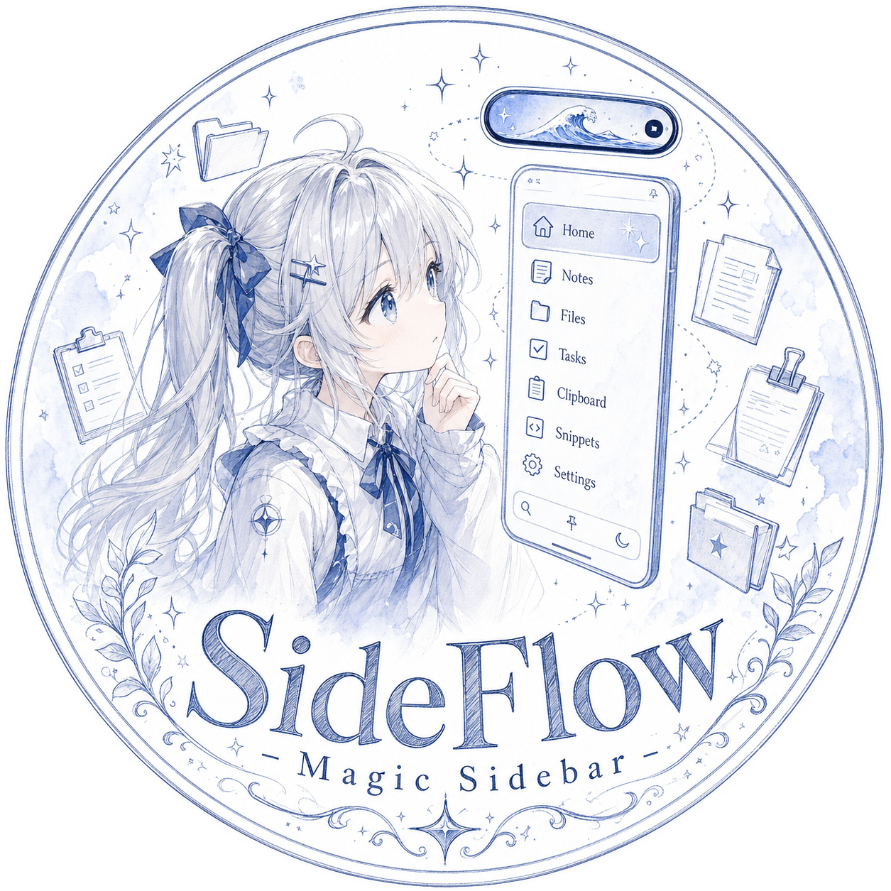

CLIPBOARD
卡片式剪贴板
# 一键转换
def
magic
(x):
return
f"→ {x}"
MAGICLASS
日程课表
✓
08:00 算法基础
✓
10:30 工程实践
14:00 项目评审
DEVICE LINK
连接二维码
扫描加入
局域网协作
SideFlow://local
AI · DEEPSEEK
流式对话
正在为你整理思路…
MULTIMODAL
多模态文件
OCR 自动提取 · 2,348 字
NOTES
灵光速记
“侧边栏的打开方式，才是工作流的起点。”
— 今天 14:22
TASKS
今日任务
✓
官网动画开发
插件市场接入
内测邀请发送

PROJECT SIDEFLOW
魔法将在屏幕边缘发生
本地优先、云端按需的跨平台"超级侧边栏 + 灵动岛"桌面端工作区
敬请期待